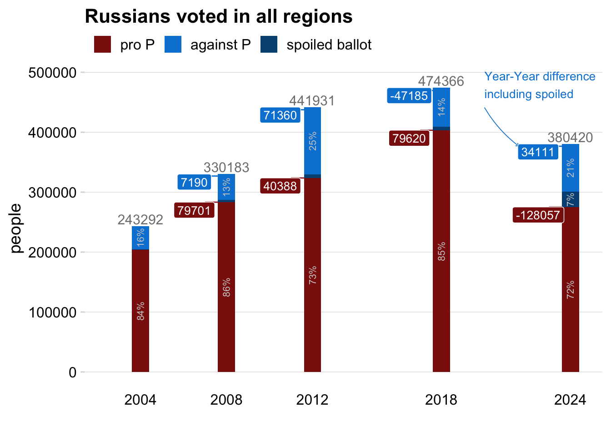

Выборы в России из-за границы
Как голосуют на российских выборах граждане РФ проживающие за границей
Здесь будет аннотация
В 2020 году мне стало интересно, как проголосовала заграница на референдуме по изменению конституции. В результате, родилась вот такая короткая заметка. В связи с предстоящими выборами (начал я писать до) я решил посмотреть ретроспективно на прошедшие выборы. Я не журналист, просто люблю находить какие-то смыслы с помощью данных. В этот раз вышло немного больше чем в 20-ом.
Если есть какие-то мысли пишите мне в телеграм @vearlen.
Общие сведения
В 2024 году за пределами России проживает 1 890 8631 избирателя, это 1.7% от всех избирателей.
Явка
Явку оценить довольно сложно, т.к. сведения о проживающих в разных странах не всегда совпадают с годом голосования2 и не всегда легко доступны. Ниже приведенный график дает общее представление, разброс явки от 2 до 70%. Лидируют Республика Молдова, Латвия, Литва, Греция, Эстония.
Явка в Австрии 7% или 14%, последняя если считать относительно проживающих в Вене. На последние выборы президента в 2018 году в Вене пришло 2248 человека, в Австрии в 2018 году проживало 32 4293 человека с российским гражданством из них примерно 50% живет в Вене.
Где живет большинство
Как же распределены граждане РФ за рубежом? Например, в Европе проживает в районе 679 028 человек, 0.6% от всех избирателей и 35% от всех проживающих за рубежом. Больше всего в Европе россиян живет в Германии - 237 816, 35% от всех “европейцев”.
Как менялось количество и динамика голосования
Ниже показаны страны, составляющие 75% от всех проголосовавших по годам.
До 2012 года первой по вкладу была Грузия, потом она исчезла. Появились Абхазия и Осетия.
В 2018 исчезла Украина и кол-во стран набирающих 75% выросло до 18, в 2008 их было 10.
В 2020 году в топ 75% появилась Сирия.
В целом в любой год топ 5 стран дают почти 50% избирателей за рубежом и эти топ пять это:
Как голосует Европа
